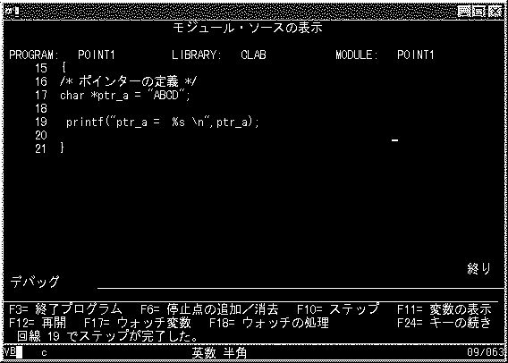

|
Ｃ言語の最初の壁、ポインターです。これは、ＲＰＧ言語仕様にないものですから特に理解が難しいと思います。まずは、ポインターとはこんなものかっていう感覚をつかむようにしてください。
ポインターの説明に入る前に、以下のＲＰＧをみてください。
ＲＰＧプログラム POINT1R
E PTRA 5 5 1
E PTRB 5 1
I DS
I 1 5 PTRA
I 1 5 PTRB
C*
C MOVE 'X' PTRB,1
**
ABCD
|
１バイトの文字を5個持てる配列、ＰＴＲＡ、ＰＴＲＢを定義し、それをデータストラクチャーの同じ桁のところに定義しています。
ここでは、PTRA,1の値が"A"ならばPTRB,1も"A"ですよね。
PTRB,1を"X"に変更するとPTRA,1も"X"に変わります。
なぜかっていうと、PTRAとPTRBは同じエリアをさしているからです
ポインターとは、何かをさしている物です
それでは、以下のＣのプログラムを作成してください。
（ソースコードは、CCSID(65535)で作成し、コンパイルオプションは＊ＰＲＩＮＴとDEBUG
*ALLを指定して作成してください）
ポインターを使ったＰＧＭ POINT1
/*---------------------------------------------------------------*/
/* PROGRAM-ID : POINT1 */
/* REMARKS : ポインターを使ったＰＧＭ */
/* AUTHOR : Y.Ide */
/* DATE-WRITEN : 98/04/28 */
/* VERSION : 01.00 ORIGINAL */
/*---------------------------------------------------------------*/
/* Ｃ言語の最初の壁はポインターです。 */
/* これを使いこなせばマスターへの道はすぐそこです */
/* */
#include<stdio.h>
void main()
{
/*ポインターの定義*/
char *ptr_a = "ABCD";
printf("ptr_a = %s \n",ptr_a);
}
|
作成したら実行して見てください、エラー無く作成できたでしょうか？
char *ptr_a = "ABCD";この部分がポインターの定義です。
＊は間接演算子です。＊をつけて定義するとポインターになります。
ここでは、ポインターを定義すると同時にそのポインターが、"ABCD"という文字列をさすように定義しています。
こう少し詳しく見てみましょう。
STRDBG POINT1を実行してください。
ソースコードが表示されますね。
Ｆ１０のステップ実行を押してください。
デバッグの準備ができましたので、ＰＧＭ ＰＯＩＮＴ１を実行してください
ＣＡＬＬ ＰＯＩＮＴ１
最初のステップで実行が止まりました。
POINT1実行結果イメージ

以下のデバッグコマンドを実行してください。
［コマンド］EVAL ptr_a
［結 果 ］ptr_a = SPP:FB76AE82AF001008
SPP:はスペースポインターであることを表します。
FB76AE82AF001008は、このポインターがさしている先のアドレスです。
（注：ＯＳ／４００ではポインターを何種類かに分けて管理しています。スペースポインターは、自分のＪＯＢ／ＰＧＭで有効なメモリーエリアに対するポインターです。プログラムからのアクセスはポインターアドレスを使って自由にアクセスが可能ですが、他のＪＯＢからは同じポインター値を指定してもアクセスすることはできません。何故かと言うと、スペースポインターとして使用できるエリアは、ＪＯＢごとに割り振られるからです（ＱＴＥＭＰもＪＯＢごとで同じＱＴＥＭＰでもＪＯＢごと内容は違いますよね）ＡＳ／４００のスペースポインターは、ユーザーから見えない部分に隠し情報を持っていて、ＪＯＢごとに管理されています。 他のプラットフォームとの実装の違いが一番でるのがこの部分で、ＵＮＩＸなどからの移植で問題になりやすい部分です。この点については他の機会に詳しく解説したいと思います。）
次に、以下のコマンドを実行してください
［コマンド］EVAL &ptr_a
［結 果 ］&ptr_a = SPP:D3E8C9B064000320
＆はアドレス演算子と言います。＆をつけると変数自身のアドレスを帰します
＆ｐｔｒ＿ａはｐｔｒ＿ａ自身のアドレスを表します。
ｐｔｒ＿ａはFB76AE82AF001008
＆ｐｔｒ＿ａはD3E8C9B064000320 です
次に以下のコマンドを実行してください
［コマンド］EVAL *ptr_a
［結 果 ］*ptr_a = 'A'
＊は間接演算子でしたね、＊とアドレスで、そのアドレスの値を戻します。
＊ｐｔｒ＿ａは（＊FB76AE82AF001008）でそこには'A'の文字が格納されています
ポインターには、文字列”ＡＢＣＤ”の最初の'A'のアドレスしか格納してません。
Ｂにアクセスするにはどうすれば良いのでしょう？
ＢはＡのアドレスの次にあるので以下のようにできます
［コマンド］ EVAL *(ptr_a + 1)
［結 果 ］*(ptr_a + 1) = 'B'
このように、Ｃ言語では文字列の先頭のアドレスしか持っていません。
文字列の終わりはＮＵＬＬが現れるまでという約束になっています。
ＰＧＭで文字列を使用するには、ＮＵＬＬで終端されているか、文字数を明示的に指定して処理することが必要です。
'A'以下のＢＣＤを表示するには、以下のコマンドを実行してください
［コマンド］EVAL *ptr_a:f
［結 果 ］*ptr_a:f = ABCD
：ｆは先頭のアドレスからＮＵＬＬまでを表示します。文字列の最後にＮＵＬＬが必要です。
［コマンド］EVAL *ptr_a:s
［結 果 ］*ptr_a:s = "ABCD"
：ｓは、先頭のアドレスからＮＵＬＬが現れるか，２０文字（省略値）まで表示する。
２０文字以上表示したいときには”：ｓ 文字数”と記述します。
［コマンド］EVAL *ptr_a:x 5
［結 果 ］00000 C1C2C3C4 00000000 00000000
00000000 - ABCD............
：ｘは１６進表示の指定です、指定された５文字分を１６進で表示しています。
この状態のメモリーは以下のようになっています。
メモリーアドレス 値
&ptr_a D3E8C9B064000320 FB76AE82AF001008
*ptr_a FB76AE82AF001008 'A'
*(ptr_a + 1) FB76AE82AF001009 'B'
*(ptr_a + 2) FB76AE82AF001010 'C'
*(ptr_a + 3) FB76AE82AF001011 'D'
*(ptr_a + 4) FB76AE82AF001012 00(NULL)
|
ポインターに関しては以下のことを覚えてください。
-
変数に＊をつけて定義したらポインターになる
-
変数に＆をつけたらアドレスを戻す
-
＊とポインター変数で、ポインターがさしている先の値を表す
ところで、ポインターは何かを差していなければなりません。
何も差していないポインターを使うとどうなるでしょうか？
ポインターを使ったＰＧＭ POINT2
/*-----------------------------------------------------------*/
/* PROGRAM-ID : POINT2 */
/* REMARKS : ポインターを使ったＰＧＭ */
/* AUTHOR : Y.Ide */
/* DATE-WRITEN : 98/04/30 */
/* VERSION : 01.00 ORIGINAL */
/*-----------------------------------------------------------*/
/* ｍａｌｌｏｃ */
/* ポインターにメモリーを割り当てる */
#include<stdio.h>
#include<stdlib.h> /* malloc使用のため*/
void main(){
/*ポインターの定義*/
char *ptr_a;
char *ptr_b;
/*ポインターＡにメモリーを割り当てる */
ptr_a = malloc(5);
printf("ptr_a = %s \n",ptr_a);
/*メモリーが割り当てられていないポインターを使うとどうなるか？*/
printf("ptr_b = %s \n",ptr_b);
}
|
上記のptr_aには、関数malloc(5)を使用して５バイトのメモリーを割り当てていますが、ptr_bには特になにも割り当てていません。この状態のポインターは何も差していない（ポインター値はNULL）です。
ＮＵＬＬポインターまたは不正なポインターをプログラムで使用するとどうなるでしょう
おそらく、printf("ptr_b = %s \n",ptr_b);のところで終了するはずです。
ＪＯＢＬＯＧをみてエラーメッセージなど確認してみてください。
ＡＳ／４００のメッセージの出方は独特なので、ピンと来ないかもしれませんが、ＯＳのエラーが起こったときに見た事があるようなメッセージじゃないですか？
次のプログラムを見てください
ポインターを使ったＰＧＭもどき POINT3
/*----------------------------------------------*/
/* PROGRAM-ID : POINT3 */
/* REMARKS : ポインターを使ったＰＧＭ */
/* AUTHOR : Y.Ide */
/* DATE-WRITEN : 98/04/30 */
/* VERSION : 01.00 ORIGINAL */
/*----------------------------------------------*/
/* ＆はアドレス演算子です。 */
/* 変数のメモリーアドレスをかえします */
/* */
#include<stdio.h>
#include<stdlib.h>
#include<string.h>
void main(){
/*ポインターの定義*/
char *ptr_a;
/*配列の定義*/
char DATA[5] = "ABCD";
/*配列DATAのメモリーアドレスをポインターに代入*/
ptr_a = &DATA[0];
printf("ptr_a = %s \n",ptr_a);
printf("DATA = %s \n",DATA);
/*配列の値を変更*/
DATA[0] = 'X';
DATA[1] = 'Y';
DATA[2] = 'Z';
DATA[3] = '?';
printf("ptr_a = %s \n",ptr_a);
printf("DATA = %s \n",DATA);
}
|
今度は、配列ＤＡＴＡ［４］を定義して、そのアドレスをポインターに代入しています
［注］Ｃの配列の添字は、０から始まります
配列ＤＡＴＡの値を変更すると、当然それを差しているポインターの内容も変わります
同じところを参照しているのだからです
ＤＡＴＡの内容を変更して、*ptr_aを表示すると、ＤＡＴＡと同じ出あることがわかると思います
ＲＰＧで書くとどうなるでしょう。ＲＰＧにはポインターがないので完全に同じにはもちろんできませがこんな感じでしょうか
ポインターを使ったＰＧＭもどき POINT3R
H Y/ 1
H*---------------------------------------------------------------*
H* PROGRAM-ID : POINT3R *
H* REMARKS : ポインターを使ったＰＧＭもどき *
H* AUTHOR : Y.IDE *
H* DATE-WRITEN : 98/04/30 *
H* VERSION : 01.00 ORIGINAL *
H*---------------------------------------------------------------*
E DATA 1 5 1
I DS
I 1 5 PTR#A
I 1 5 DATA
C*
C DSPLY PTR#A
C*
C MOVE 'X' DATA,1
C MOVE 'Y' DATA,2
C MOVE 'Z' DATA,3
C MOVE '?' DATA,4
C*
C DSPLY PTR#A
C*
C SETON LR
C RETRN
C*
**
A
B
C
D
|
-
ＤＡＴＡは１バイトのテーブルで５個の要素をもち、初期値を”ＡＢＣＤ”として持ってます。
-
ＰＴＲ＃Ａという文字フィールドをＤＳで同じ場所に定義しています。これで、ＰＴＲ＃ＡとＤＡＴＡとは同じメモリーアドレスをさしているはずです。
-
ＤＡＴＡ，１の内容を変更すると、ＰＴＲ＃Ａの値も変わります。同じところを参照しているからですね
［注］ＲＰＧの配列の添字は、１から始まります
同じような例ですが
ポインターを使ったＰＧＭ POINT4
/*---------------------------------------------------------------*/
/* PROGRAM-ID : POINT4 */
/* REMARKS : ポインターを使ったＰＧＭ */
/* AUTHOR : Y.Ide */
/* DATE-WRITEN : 98/04/30 */
/* VERSION : 01.00 ORIGINAL */
/*---------------------------------------------------------------*/
/* ポインターとポインター */
/* */
#include<stdio.h>
#include<stdlib.h>
#include<string.h>
void main(){
/*ポインターの定義*/
char *ptr_a;
char *ptr_b = "ABCD";
/*ポインターＢの内容をポインターＡに代入 */
ptr_a = ptr_b;
/* STRDBGでこの上の行で停止しptr_a,prt_bの値を見て下さい*/
printf("ptr_a %s \n",ptr_a);
printf("ptr_b %s \n",ptr_b);
/*ポインターＡの内容のみ変更*/
ptr_a??(0??) = 'X';
ptr_a??(1??) = 'Y';
ptr_a??(2??) = 'Z';
ptr_a??(3??) = '!';
printf("ptr_a %s \n",ptr_a);
printf("ptr_b %s \n",ptr_b);
}
|
-
ptr_aとptr_bは同じアドレスを指しますので、同じ値を持っています
-
&ptr_aと&ptr_bはそれぞれ自分自身のアドレスを示します。持っているアドレスは同じでも格納している場所は別々です。
また、ＲＰＧで書いてみましょう？
ポインターを使ったＰＧＭもどき POINT4R
H Y/ 1
H*--------------------------------------------------------*
H* PROGRAM-ID : POINT4R
H* REMARKS : ポインターを使ったＰＧＭもどき
H* AUTHOR : Y.IDE
H* DATE-WRITEN : 98/04/30
H* VERSION : 01.00 ORIGINAL
H*--------------------------------------------------------*
E PTRA 5 5 1
E PTRB 5 1
I DS
I 1 5 PTRA
I 1 5 PTRB
C*
C MOVE 'X' PTRA,1
C MOVE 'Y' PTRA,2
C MOVE 'Z' PTRA,3
C MOVE '?' PTRA,4
C*
C DSPLY PTRB,1
C DSPLY PTRB,2
C DSPLY PTRB,3
C DSPLY PTRB,4
C*
C SETON LR
C RETRN
C*
**
ABCD
|
残念ながらこのへんで限界のようですね、
-
ＲＰＧでは、Ｃ仕様書でｐｔｒ_a = ptr_bのように他の変数と同じエリアを参照させる命令がありません
-
ＲＰＧでは、moveコマンドを用いて値をコピーするしかありません。この場合はもちろん同じ値を別々のエリアに格納することになるので、片方変更したからといって、もう一方にはなんの影響もありません。
-
ＲＰＧでは、変数自身がもつアドレスを参照したり設定したりってことはできません。でも内部ではもちろん使用しています。プログラマーからは完全に見えなくしているだけです。
それでは、ＲＰＧからＣのプログラムを呼び出してパラメーターを渡してみましょう。
［注］原則Ｃではパラメーターは値渡しです、ＲＰＧでは参照渡しです。
ポインターを使ったＰＧＭ POINT5
/*---------------------------------------------------------*/
/* PROGRAM-ID : POINT5 */
/* REMARKS : ポインターを使ったＰＧＭ */
/* AUTHOR : Y.Ide */
/* DATE-WRITEN : 98/04/30 */
/* VERSION : 01.00 ORIGINAL */
/*---------------------------------------------------------*/
/* ＲＰＧから呼ばれるプログラム */
/* ＲＰＧとＣはポインター渡しでパラメーターを受け取る */
#include<stdio.h>
#include<stdlib.h>
#include<string.h>
void main(int argc, char *argv[])
{
/*ポインターの定義*/
char *ptr_a;
/*パラメーター取得*/
ptr_a = argv[1];
printf("PRAM = %s \n",ptr_a);
}
|
-
main(int argc, char *argv[])の部分が、パラメータ受取のための定義になります、ＲＰＧだと*ENTRY
PLISTに相当します
-
ａｒｇｃに受け取ったパラメーターの個数が入ります
-
＊ａｒｇｖ［］はポインターを格納する配列となります。
＊ａｒｇｖ［］の構造は、以下のようになります
パラメーター１ ”ＡＡＡ” メモリーアドレス １００−１０３
パラメーター２ ”ＢＢＢ” メモリーアドレス ２００−２０３
パラメーター３ ”ＣＣＣ” メモリーアドレス ３００−３０３
ａｒｇｖのアドレスが００１だとすると
| アドレス |
値 |
変数 |
| ００１ |
１００ |
argv[1] |
| ００２ |
２００ |
argv[2] |
| ００３ |
３００ |
argv[3] |
| ００４ |
ＮＵＬＬまたは不定（何が入っているかは解らない |
argv[4] |
| １００ |
”Ａ” |
parm1 |
| １０１ |
”Ａ” |
|
| １０２ |
”Ａ” |
|
| １０３ |
ＮＵＬＬまたは不定 |
|
| ２００ |
”Ｂ” |
parm2 |
| ２０１ |
”Ｂ” |
|
| ２０２ |
”Ｂ” |
|
| ２０３ |
ＮＵＬＬまたは不定 |
|
| ３００ |
"C" |
ｐａｒｍ３ |
| ３０１ |
"C" |
|
| ３０２ |
"C" |
|
| ３０３ |
ＮＵＬＬまたは不定 |
|
[注１］アドレスは解りやすくするために実際のアドレスよりも桁数が少なくなっています
[注２］ａｒｇｖ［０］には、プログラム名が入ります
H Y/ 1
H*-----------------------------------------------------*
H* PROGRAM-ID : POINT6R
H* REMARKS : Ｃを呼び出すＰＧＭ
H* AUTHOR : Y.IDE
H* DATE-WRITEN : 98/04/30
H* VERSION : 01.00 ORIGINAL
H*-----------------------------------------------------*
E PTRA 5 5 1
E PTRB 5 5 1
I DS
I 1 5 PTRA
I 6 10 PTRB
I 11 15 DATA1
I 16 20 DATA2
I 21 21 NULL
C*
C MOVE *LOVAL NULL
C MOVE 'DATA1' DATA1
C MOVE 'DATA2' DATA2
C*
C CALL 'POINT5'
C PARM PTRA
C*
C CALL 'POINT5'
C PARM PTRB
C*
C CALL 'POINT5'
C PARM DATA1
C*
C CALL 'POINT5'
C PARM DATA2
C*
C CALL 'POINT5'
C PARM PTRA
C*
C SETON LR
C RETRN
C*
**
PTRA
**
PTRB
|
-
ＲＰＧは参照渡しなので、自分のもつ変数のアドレスをパラメーターとして渡します。
-
Ｃでは、パラメータをポインターとして扱い、ポインターからＮＵＬＬまでを表示しています
-
ＲＰＧから渡しいてるパラメーターは一つだけですが、ＤＳの定義のためにフィールドが連続しています。そのため、各先頭のフィールドをＲＰＧから渡すと、それ以降のフィールドの値もＣで読めています。
|